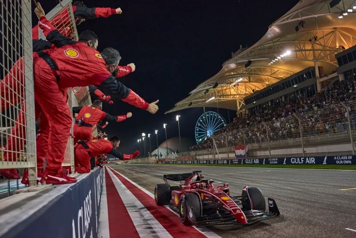
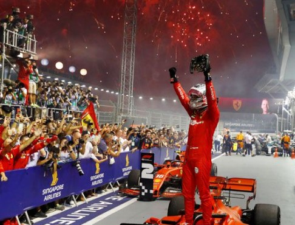
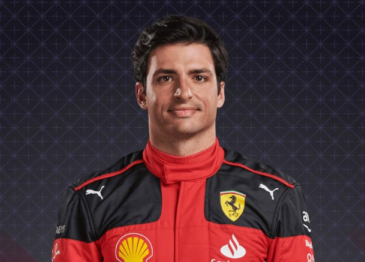
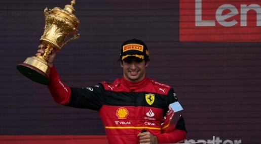
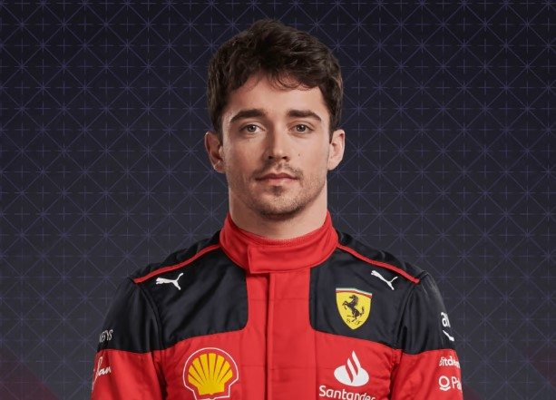
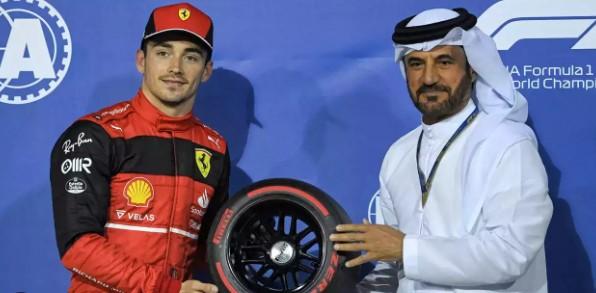
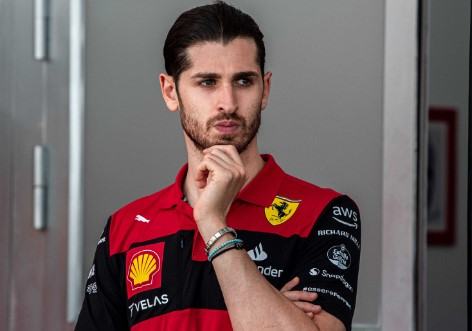
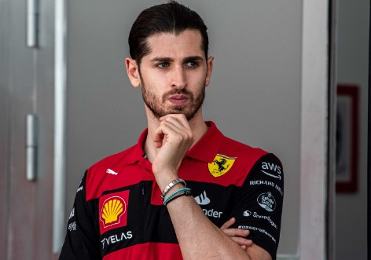
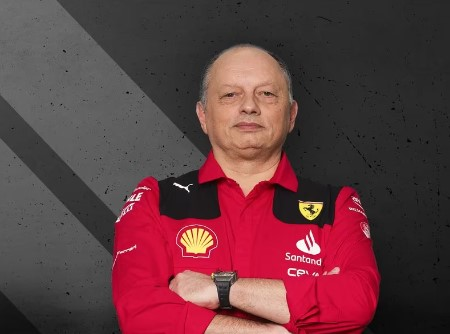
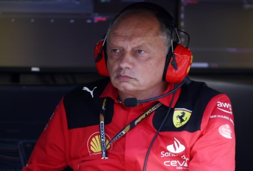

Scuderia Ferrari
 - Base: Maranello, Italy
- Team Chief: Frédéric Vasseur
- Technical Chief: Enrico Cardile / Enrico Gualtieri
- Chassis: SF-23
- Power Unit: Ferrari
- First Team Entry: 1950
- World Championships: 16
- Highest Race Finish: 1st
- Pole Positions: 245
- Fastest Laps: 259
Ferrari, an iconic name in Formula One, has a rich history marked by numerous Constructors' and Drivers' Championships. The Italian team's passionate fan base, known as the "Tifosi," and its iconic red livery are synonymous with the sport. Ferrari's commitment to performance, engineering excellence, and legendary drivers like Michael Schumacher and Niki Lauda have cemented their status as a cornerstone of Formula One's legacy.
Race Drivers:
- Carlos Sainz Jr:  
- Charles Leclerc:  
Carlos Sainz, a Spanish driver, has made a significant impact in Formula One. Known for his consistency and versatile driving skills, he has raced for teams like McLaren and Ferrari. Sainz's ability to adapt to different car characteristics and deliver solid performances has earned him respect on the grid. His move to Ferrari represents a new chapter in his career, where he aims to continue his competitive trajectory.
Charles Leclerc, a Monegasque driver, is a rising star in Formula One. Joining Ferrari in 2019, he quickly showcased his raw talent with pole positions and victories. Leclerc's aggressive yet calculated racing style, combined with his strong work ethic, has earned him admiration. As Ferrari's future lead driver, he aspires to emulate the team's iconic champions and become a title contender.
Reserve Driver:
- ANTONIO GIOVINAZZI
 

Antonio Giovinazzi retains his role as Ferrari reserve driver, which he’s held since he was dropped from Alfa Romeo in 2021. As part of his agreement, he is also on hand for Alfa Romeo and Haas.He appeared for the latter in a couple of free practice sessions, which led to speculation of a full-time seat at Haas for 2023 before the vacancy went to Nico Hulkenberg.
Team principal:
- Frédéric Vasseur:  
Born on May 28, 1968, Frédéric Vasseur is a French motorsport engineer and manager renowned for his extensive experience in overseeing Formula-series teams. Presently, he holds the role of team principal and general manager at Scuderia Ferrari. Prior to this, he held the positions of managing director, CEO, and team principal at Alfa Romeo Racing, which is based in Switzerland. Vasseur's journey began with his education in aeronautics and engineering, followed by the establishment of his own team, ASM, where he embarked on his career in the junior Formula-series.